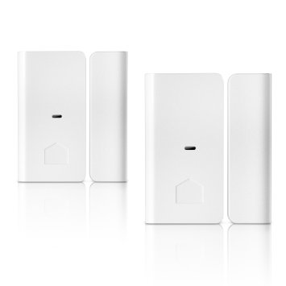
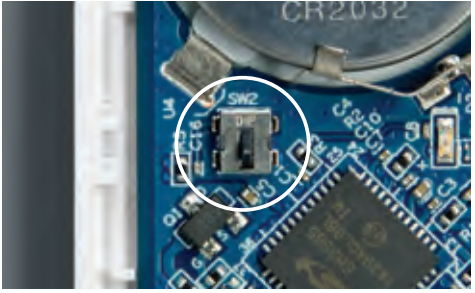

Quirky Smart window/door sensor¶
Wink Quirky+GE Tripper Door/Window Sensor¶

Brief information¶
This device lets you keep tabs on any door or window in your house from anywhere. Install it on your bedroom window, pantry door, or medicine cabinet, and it’ll send you an alert whenever a connected hatchway opens or shuts.
- Features:
- Monitor door and window activity via your mobile device. Keep tabs on closets, medicine cabinets, pantries, and more
- When the status of any door or window changes, you’ll be instantly notified. Catch curious kids, midnight snackers, cabinet snoopers, and more.
- Connect it to other smart home products to trigger a series of actions, like turning on your smart lights when the front door is opened.
Inclusion/Exclusion to/from a network¶
- Put controller to Inclusion/Exclusion mode
- Press and hold the tamper while removing battery
- Keep holding tamper, inserting battery then release
- Device will be reset and joined to any open network
How to add to VENUS app¶

- Newly add device to Zigbee network
- Press “Add button” (button ‘+’) in app
- Remove the plastic pull-tab from the back of device
- Wait for VENUS scan & detect this device and inform in app
- Reset and reconnect
- Press “Add button” (button ‘+’) in app
- Open the sensor box
- Press and hold black tampter button while removing battery.
- Keep holding tamper button, re-install battery and then release.
- Release the button when the LED is ON. The LED will blink blue while attemping to connect.
- Wait for VENUS scan & detect this device and inform in app
How to add/remove associated device(s) to¶
To add associated device(s) to this sensor, below action is required:
- Add z-wave notified-devices (which will be associated to this sensor) to VENUS
- Select Associate button and then select notified-device(s) to add
- Wake-up this sensor: tbd
- If successful, pop-up notification displays in VENUS app
To remove associated device(s) from this sensor, below action is required:
- Select Associate button and then select notified-device(s) to remove
- Wake-up this sensor: tbd
- If successful, pop-up notification displays in VENUS app
Configuration description¶
There is no configuration for this device.